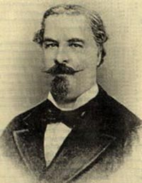

José Milla y Vidaurre
Más conocido por el seudónimo con el que se dio a conocer en la prensa,«Salomé Jil», este escritor figura en la vanguardia de las letras guatemaltecas.
Vino al mundo el 4 de agosto de 1822, y ya en la niñez se perfilaron su
inteligencia y sus aficiones más perdurables. Guiado por el buen criterio familiar,
siguió los cursos del Colegio Seminario, donde obtuvo la graduación como bachiller de filosofía.
Sin duda, el adjetivo que mejor le cuadraba, ya en la juventud, es el de letraherido,
aunque sin posibilidades de llevar una vida ociosa, y ello viene a explicar que,
acuciado por necesidades de orden material, abandonase la carrera de Ciencias
Jurídicas que había iniciado en la Escuela de Derecho de la Universidad de San Carlos Borromeo.
Por lo demás, es pensable que esa formación en el campo de la abogacía
le resultó de utilidad en una muy fructífera trayectoria funcionarial.
Fue secretario de la Hermandad de Caridad del Hospital General de Guatemala y más adelante oficial
mayor del Ministerio de Relaciones Exteriores. Ascendiendo posiciones en el
régimen conservador del general Rafael Carrera, llegó a ser secretario general
de dicho gobierno. Gracias a ese cargo diplomático,
pudo cultivar su espíritu intelectual y curioso en aquellas capitales europeas adonde lo
condujo su labor política. Cuando por fin alcanzó a ocupar
la plaza de consejero de Estado, Milla y Vidaurre ya era un prolífico periodista y escritor.
La revolución de 1871 lo condujo al destierro.
No obstante, uno de los promotores del movimiento revolucionario,
Justo Rufino Barrios, lo reclamó para que redactase, a partir de 1876,
la Historia de Centroamérica. En 1879 publicó la primera entrega de este proyecto:
Historia de la América Central, desde el descubrimiento del país por los españoles
hasta su independencia de España. A su muerte, ocurrida el 30 de septiembre de 1882,
el escritor dejaba una muy extensa y admirable bibliografía, en la cual destacan
el poema narrativo Don Bonifacio (1862) y las novelas El canasto del sastre (1864),
La hija del Adelantado (1866), Los Nazarenos (1867), El visitador (1868),
Memorias de un abogado (1876) y El esclavo de don Dinero (1881). Un volumen recopilatorio,
Cuadros de costumbres (1882), reúne textos de naturaleza costumbrista, publicados originalmente en la prensa.

Me gustaría que vieras algunas de las obras de José Milla y Vidaurre ¡Son increíbles! ¿Te gustaría conoerlas?